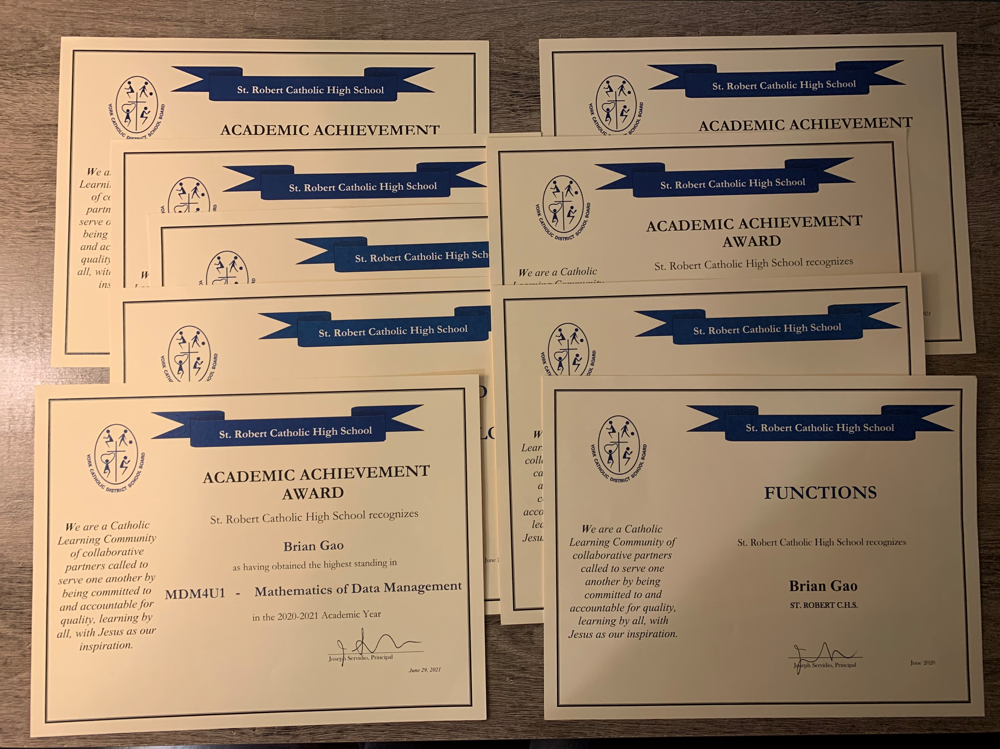
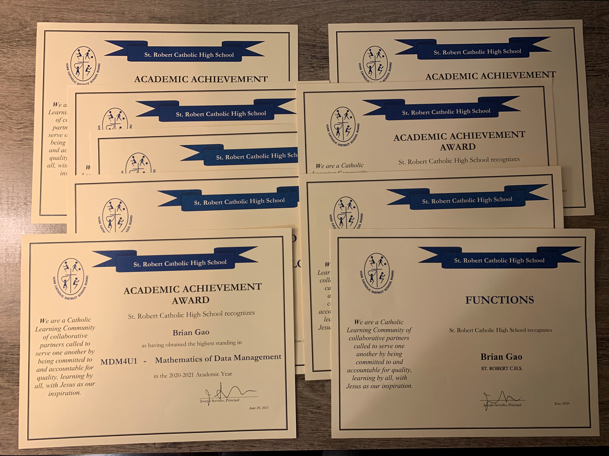

Projects
Calculator

Etch-a-Sketch
Rock-Paper-Scissors

Skills
4.
That's the number of programming languages I know well (6 if counting linguistic languages). These include:
Although it's not many, I'm comfortable enough with them to use in projects and interviews. I'm also familiar with:
In regards to frameworks, I know:
Awards
 

2021 Top Scholar
Given to students who achieve a perfect 100% average across top 6 grade 12 subjects.
When I received the call from my vice principal that I was 1 of 2 in the school and 9 of 5000 in the school board to receive this award, I was ecstatic. It was nice to finally see my hard work pay off. It reminded me of my journey up to this point (e.g. buying textbooks in the summer to prepare for subjects) and how much I still have left to go.
School Awards (9)
Given to student with highest mark in given subject. I received 4 Grade 11 and 5 Grade 12 subject awards
Similar to the Top Scholar award, school awards were cool to have. However, looking back, marks seem so insignificant (awards too). Rather, the skills and mentality I’ve developed that resulted in these school awards are priceless and something I hope will assist me in the future.
About Me
I’m a motivated student who wants to give life my all. Out of my sparse but fruitful hobbies, the most prominent is basketball.

As shown above, I love playing basketball on my own net at home. I also enjoy going to the park and playing with friends/random other people. My favourite basketball player is Kevin Durant, and my favourite NBA team is Brooklyn Nets (or whatever team Durant is on in the future). In addition to basketball for physical activity, I enjoy going on walks to get fresh air and enjoy the scenery.

What a nice sunset! Since I walk almost everyday, chances are if you are from my neighbourhood, you’ve probably seen me at least once.
I hope the picture above looks as good as it tasted. Here I made a classic baconator with some lettuce and tomatoes, topped off with ketchup and relish. It was extremely fun to make as it was my first time actually cooking something before which brings me to one of my newer hobbies, which is cooking. Although I don’t know how to make much (basically only eggs, hamburger, congee, and bacon), it’s something I’m going to hone over the years, as it’s a great skill to have.
Finally, I really enjoy programming and tech in general (after all, I created this website). It’s strange because I told myself I hated programming for the longest time (a product of a grade 10 computer science class), but when I picked it back up towards the end of the Grade 12 year by myself, I found myself deeply invested in it, able to go hours upon hours just learning and honing my skills with no concept of time. Right now, I’m focusing specifically on improving my problem-solving skills, so that when it’s time to learn a new technology or language, my life will be 10 times easier. As such, here are the books I’m currently reading:

I hope that with grit and hard work, I will improve to one day become an awesome programmer! As a final thought, I’ll leave you with this quote:
"Live Life with no Regrets"
That’s a maxim I stand by everyday. I don’t want to look back on my past, wishing I could have done something that can’t be undone. Therefore, with as much courage and perseverance as I can muster, I try to live life making the most out of everyday, working towards a goal and checking off things on my list.
bhgao20014@gmail.com
bhgao20014
© 2021-2022, BrianGao.com, Inc, or its affliates